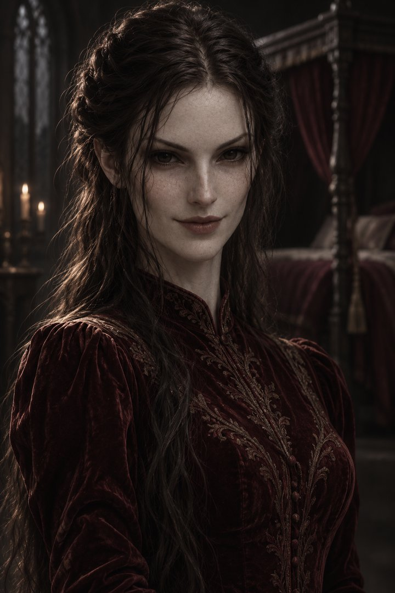
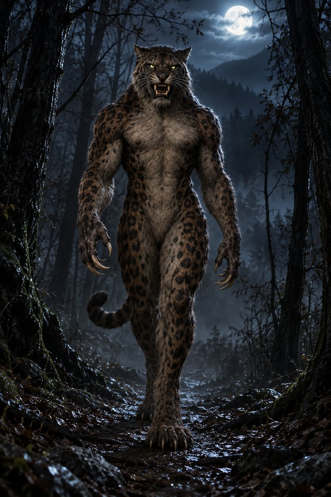
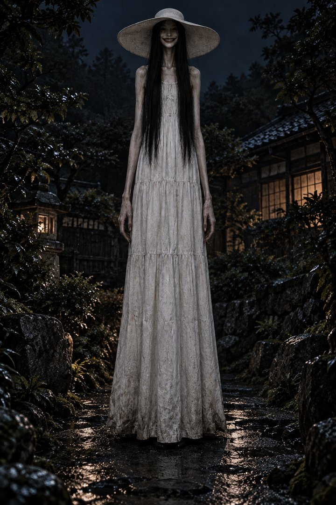
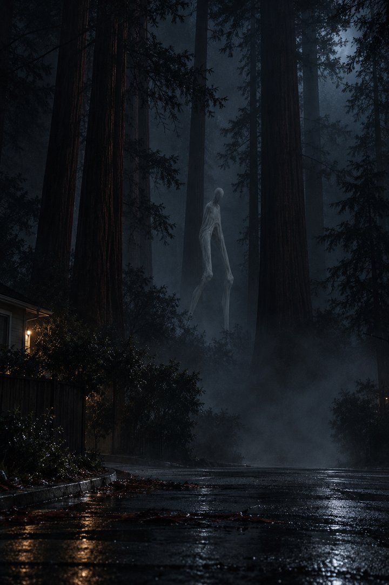

Всё мелкое, что ждало твоей проверки, — на одной странице («Лифт» — отдельно, у него своя страница). Клик по картинке — зум. Галочка под карточкой: у стиллов — «утверждено на оживление», у клипов демонов — «берём в серию», у аудио — «голос годится». Комментарии и галочки сохраняются в браузере; кнопка вверху собирает всё одним списком.
Галочка = кадр можно оживлять (по Вампусу — особое примечание в самой карточке).
Succubus — бит 2 (v2): человеческая форма, то же лицо, что монстр-форма бита 1

🎙 By day, she is the woman of your dreams. Literally. She only ever comes in dreams.
Днём она — женщина твоих снов. Буквально. Она приходит только во снах.
Wampus Cat — бит 5: решение по новому стиллу

🎙 Now she walks upright like a woman, and hunts like a cat.
Теперь она ходит прямо, как женщина, а охотится, как кошка.
На картинке — ТЕКУЩИЙ кадр бита 5: Flow дважды отклонил его фильтром, на нём больше не жжём. Новый стилл wc_beat_5_v2 ещё не сгенерирован — с 04.11 ждёт твоего ок на адаптированную концепцию: фигура далеко в кадре, спиной, в глубокой тени, без деталей тела. Галочка = ок на генерацию нового стилла по этой концепции (сам кадр после генерации покажу отдельно).
Hachishakusama — бит 9: кадр под новую фразу

🎙 Watch for the signs. And don't let the monster take your child.
Следи за знаками. И не дай монстру забрать твоего ребёнка.
Фраза сценария бита 9 заменена на эту. Вопрос: текущий кадр под новую фразу ок (галочка) или менять кадр?
Fresno Nightcrawler — бит 7: сломанные руки в генерациях

🎙 Old Native legends speak of thin white beings who come down in times of trouble.
Старые индейские легенды рассказывают о тонких белых существах, которые спускаются во времена бед.
Генерации оживления ломают руки/фигуру. Какой подход выбираем? (а) другой ракурс без рук крупным планом; (б) статика с зумом из этого кадра — тогда просто поставь галочку; (в) свой вариант — напиши в комментарии.
Богатая анимация Flow v2. Одобренные соберу в серию под голос Сатаны. Галочка под клипом = берём в серию.